How to Pick the Perfect Catskill Mountain Cabin for Your Trip — Cabin Rentals Catskills
Your trusted partner in Livingston Manor.
Visitors searching for cabin rentals Catskills often feel overwhelmed by the sheer number of options spread across Sullivan County and beyond. Livingston Manor sits right along the Willowemoc Creek, offering direct access to some of the finest trout waters in the northeast. The hamlet's quiet streets and proximity to both Roscoe and the upper Beaverkill Valley make it an ideal base for anglers, hikers, and families seeking a genuine mountain escape. Choosing the right cabin starts with knowing what this corner of the Catskills delivers best.
Bethel Woods Center for the Arts draws concertgoers and history enthusiasts to the area each summer, and many of them extend their visits by booking nearby cabins in Livingston Manor NY. The Catskill Fly Fishing Center and Museum, located just minutes from town along Old Route 17, celebrates the region's deep angling heritage and brings a steady flow of sportsmen through the valley. These landmarks anchor a community built around outdoor recreation, good food, and the kind of unhurried pace that keeps guests coming back season after season.
The four-season climate in the 12758 ZIP code creates distinct reasons to visit throughout the year. Spring runoff fills the creeks and rivers for prime fly fishing conditions, while summer brings warm days perfect for swimming holes and mountain biking trails. Autumn blankets the Catskill Mountains in vivid color, drawing leaf-peepers from New York City and the tristate area. Winter snowfall transforms the landscape into a quiet retreat for cross-country skiing and fireside relaxation in well-appointed cabin rentals Catskills visitors have trusted for years.
Route 17 and the nearby Route 206 corridor connect Livingston Manor to the broader Sullivan County region with ease. Weekend travelers from the city can reach Wegman Road in under two hours, making cabin rentals Catskills an accessible getaway for those craving fresh air without a cross-country flight. The local infrastructure — from small-town diners to well-stocked bait shops — supports the kind of self-sufficient vacation that cabin stays are all about.
J&S Creekside Cabins has been welcoming guests to Livingston Manor for cabin rentals Catskills travelers depend on for comfort and creek access. This family-owned operation sits directly along the Willowemoc Creek, giving anglers a streamside experience that larger commercial properties cannot replicate. The cabins are well-maintained and thoughtfully equipped for couples, families, and small groups who want to fish, hike, or simply unplug from city life. With strong reviews from returning visitors and a reputation built through years of consistent hospitality, J&S Creekside Cabins stands out among the options in Sullivan County. Visit J&S Creekside Cabins at 12 Wegman Rd, Livingston Manor, NY 12758 or call (607) 242-2960 today
Selecting the right cabin starts with understanding your priorities. If fly fishing tops the list, proximity to the Willowemoc or Beaverkill Creek is non-negotiable, and a property like J&S Creekside Cabins in Livingston Manor puts you within steps of productive water. For family trips, kitchen facilities, outdoor fire pits, and enough bedrooms to keep everyone comfortable matter more than luxury finishes. Consider the time of year as well — summer bookings fill quickly, while shoulder seasons offer lower rates and fewer crowds along the creek. cabin rentals Sullivan County NY • seasonal activities for Catskills cabin visitors

Creek access separates a good cabin stay from a great one. Waking up to the sound of running water and stepping out the door to cast a line before breakfast is a luxury that no amount of indoor amenities can replace. At J&S Creekside Cabins, the Willowemoc runs right through the property, giving guests private stretches of water that public access points along Route 17 simply cannot offer. This kind of direct streamside location also means quieter evenings, natural cooling in summer, and the constant backdrop of moving water that makes the Catskills feel alive. cabins Livingston Manor NY
Livingston Manor has earned its reputation as a cabin destination through decades of welcoming visitors who return year after year. The hamlet offers a walkable Main Street with local shops, a brewery, and restaurants that cater to outdoor enthusiasts without losing their small-town charm. The surrounding landscape features some of the most productive trout streams in the eastern United States, and the town's proximity to both state land and private preserves means hiking and hunting opportunities are abundant. For those considering cabin rentals Catskills, Livingston Manor checks every box without the commercial density of larger mountain towns.
Matching cabin size to group needs prevents both overspending and overcrowding. Couples looking for a quiet weekend retreat do well in a one-bedroom cabin with a small kitchen and creek views, while families or friend groups should look for two- or three-bedroom layouts with shared living spaces. At J&S Creekside Cabins, options range from intimate cottages to the larger Trout Cottage, each designed with the practical needs of outdoor-focused guests in mind. The key is booking early, particularly for peak fall foliage weekends and opening day of trout season in Sullivan County.

The hamlets of Lew Beach and DeBruce sit just north of Livingston Manor along the Beaverkill and Willowemoc valleys, offering an even more secluded alternative for cabin guests. Lew Beach is home to some of the most storied fly fishing pools in North America, while DeBruce provides trailhead access to state forest land that stretches deep into the Catskill Park. Guests staying at J&S Creekside Cabins often spend a day exploring these neighboring areas before returning to their home base on Wegman Road. The drive is scenic, short, and well worth the fuel.
Cabins offer something that traditional lodging simply cannot — privacy, self-sufficiency, and immersion in the landscape. A well-equipped cabin along the Willowemoc gives guests control over their schedule, their meals, and their pace without sacrificing comfort. At J&S Creekside Cabins in Livingston Manor, guests enjoy full kitchens, private outdoor spaces, and direct creek access that other property types in the area do not provide. For repeat visitors who know what they want from a Catskills trip, cabin rentals Catskills remain the most reliable way to experience the region on your own terms. Catskills cabin getaway • fly fishing cabins NY
Timing shapes both the experience and the cost of a cabin stay. The busiest periods in Livingston Manor run from late May through early October, with particular demand around Memorial Day, the Fourth of July, and peak leaf-peeping weekends in mid-October. Booking three to four months ahead for these windows is advisable. For better rates and more cabin availability, consider late spring before the summer rush or the quieter weeks of November when the mountains take on a peaceful, uncrowded character. J&S Creekside Cabins accommodates guests across all seasons, and off-peak stays often surprise visitors with their quality and tranquility. Ready to find the right cabin rental in the Catskills? Contact J&S Creekside Cabins at (607) 242-2960
Also explore: creekside cabins Catskills • cabins Livingston Manor NY
J&S Creekside Cabins serves customers throughout Livingston Manor and Sullivan County, including Roscoe, Lew Beach, DeBruce, Parksville, Liberty, Jeffersonville, Callicoon, Wurtsboro, and Monticello. Whether you are traveling from the Beaverkill Valley or the Route 17 corridor, our cabin rentals are nearby and ready to welcome you to the Catskill Mountains.


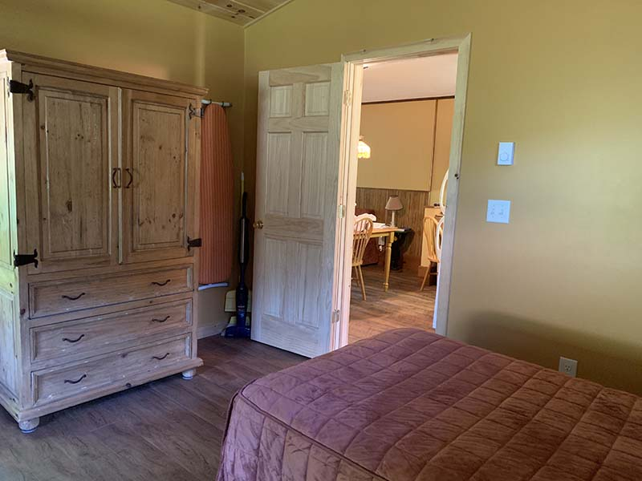


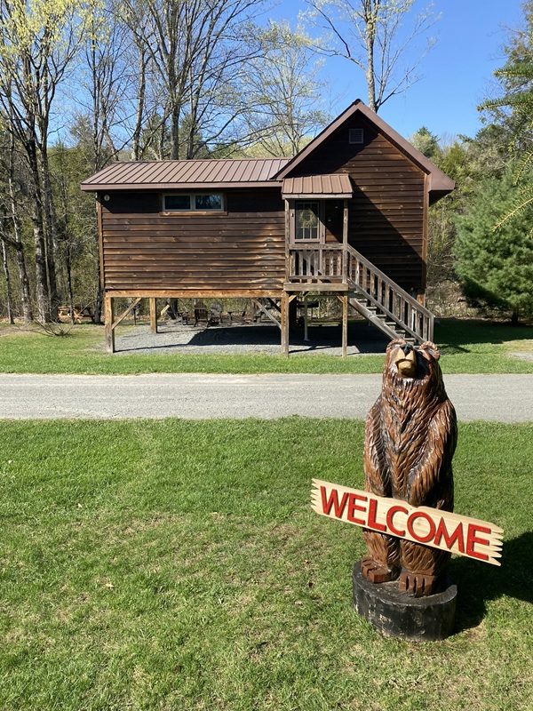


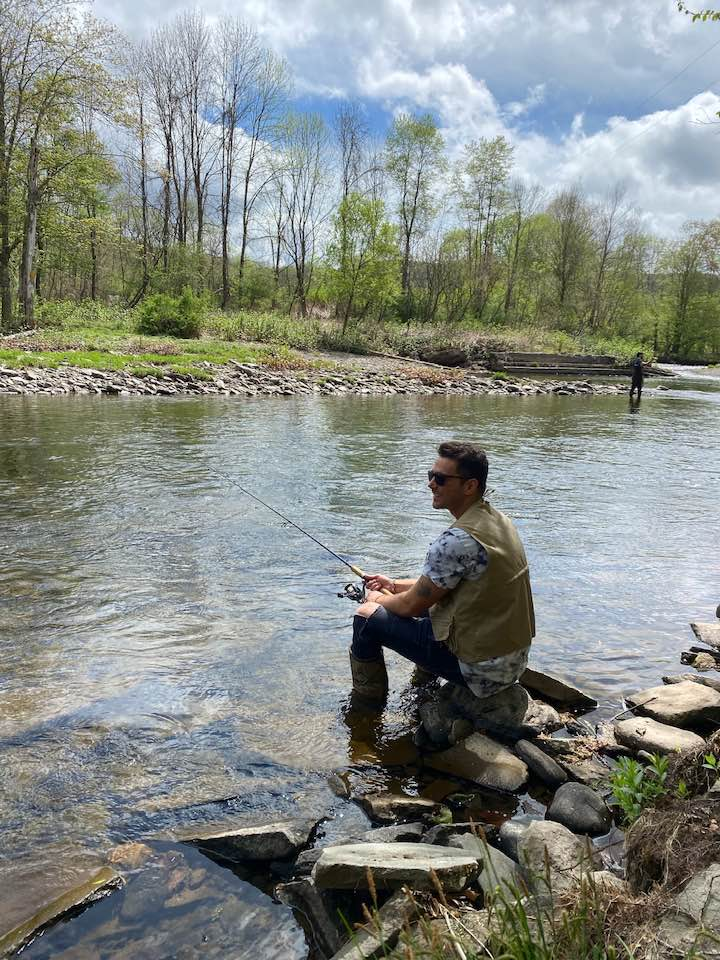
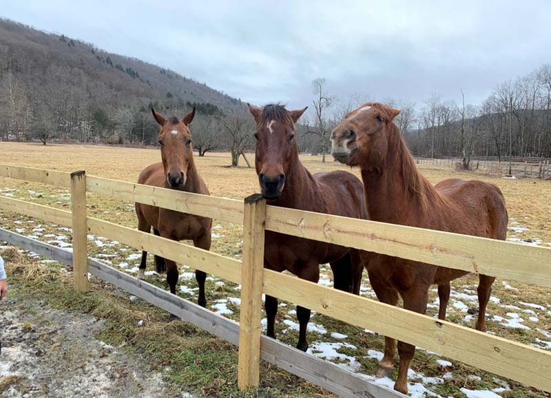


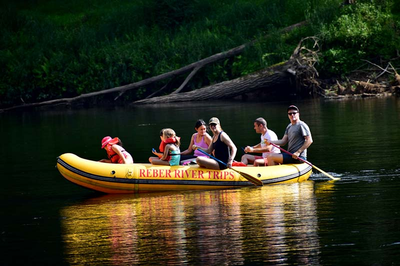
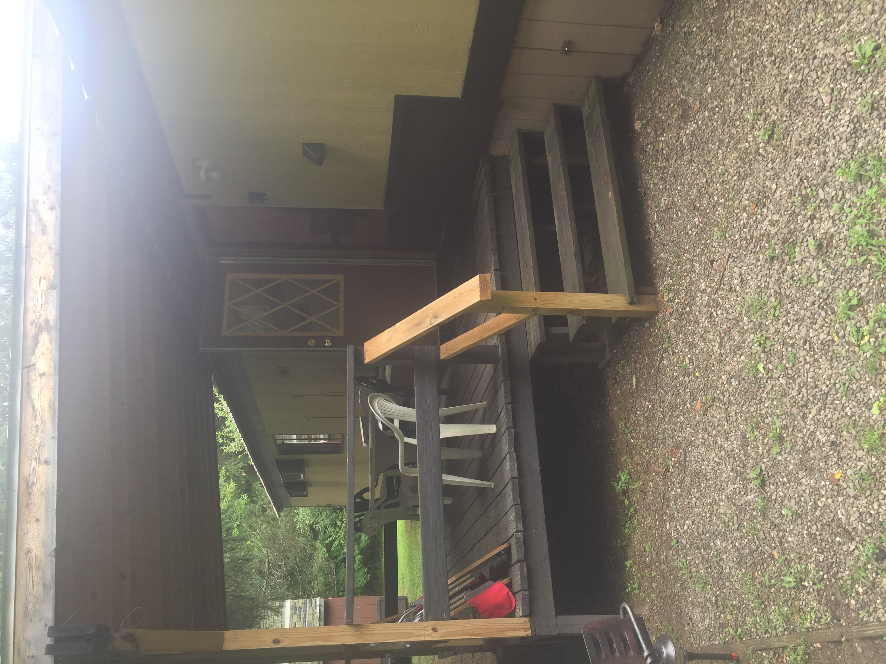

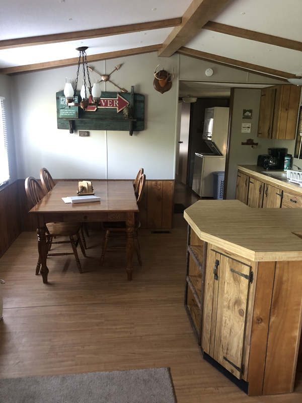
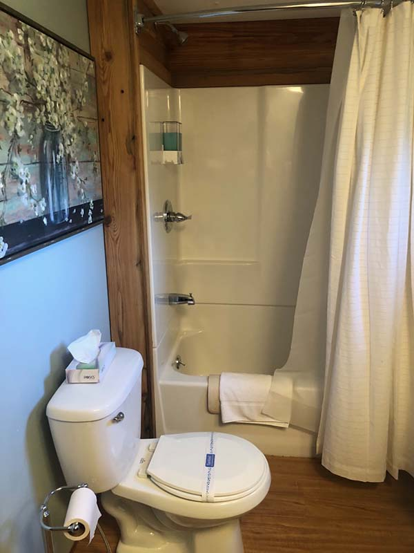

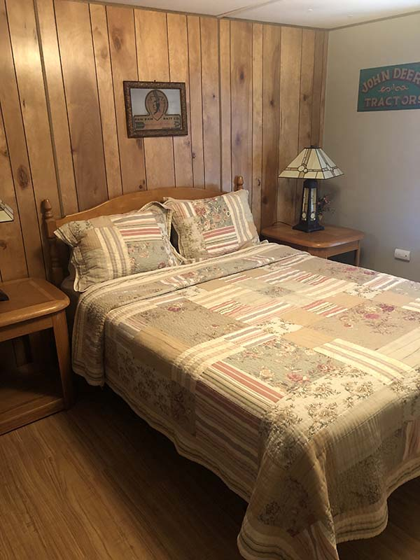

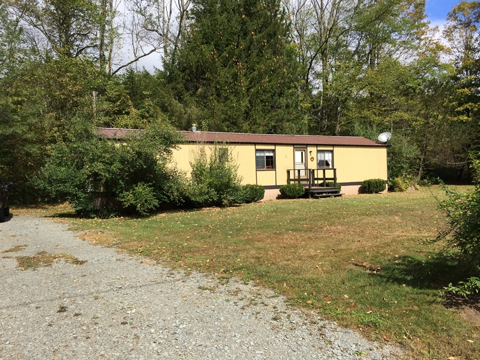
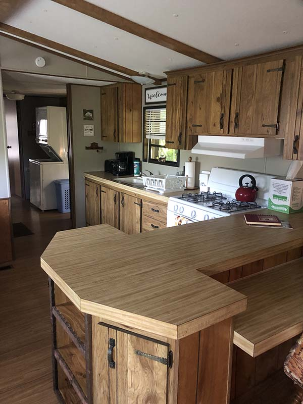
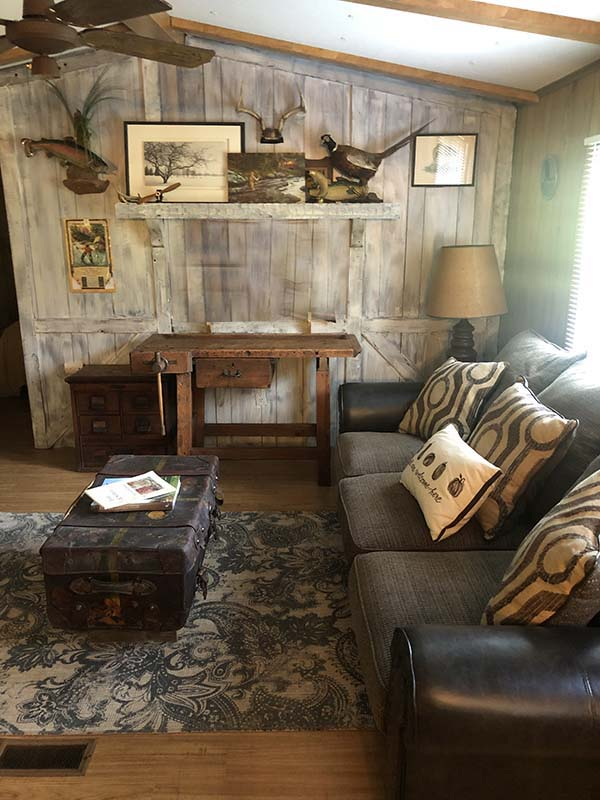
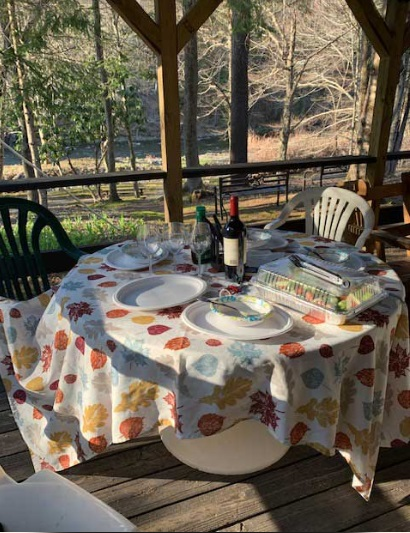
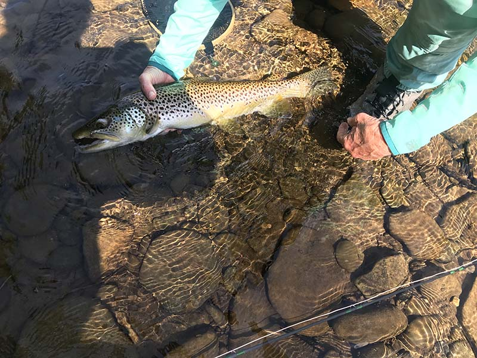